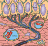

Menthol induces cold sensations when applied to skin and mucous membranes, the underlying mechanism being a stimulating action on peripheral cold receptors.. This stimulation of cold receptors by menthol is independent of any change in temperature (Hensel and Zotterman, 1951). The American Cancer Society, in their cancer awareness educational material indicates that there is enough menthol in mentholated cigarettes to induce this cold sensation (www.cancer.org/tobacco/quitting.html).
{Mucous membranes (mucosa) - the mucus secreting skin that lines (and protects against the environment) all openings, cavities or entrances into the body such as the respiratory tract, intestinal tract, urinary tract, sinuses, vagina, etc..}
In 1882 Blix discovered that a person's thermal sensations were associated with stimulation of localized sensory spots on the skin. Further investigation revealed a distinction between hot spots and cold spots; i.e., specific places in the human skin that were selectively sensitive to warm or cold stimuli.

Electrophysiological investigations of thermosensitive receptors in cats and monkeys have been studied extensively (LaMotte and Thalhammer, 1982; Kenshalo and Brearley, 1970; Lende and Poulos, 1970). The nose of the cat contains numerous cold and warm receptors that are highly specific in responding to thermal stimuli. At the site of a cold sensitive spot (cold receptor) in the cat's nose, a thin, myelinated (insulated) nerve fiber penetrates the dermis and divides into several unmyelinated branches about 70 microns beneath the skin surface. The tips of these branches have been shown to be cold-sensitive nerve endings; they come in close contact with the basal cells of the epidermis. In most cases, the nerve endings are embedded in small concavities on the lower surface of the basal cells (General Properties of Thermoreceptors, britannica.com).
At constant skin temperature, cold nerve fibers are found to have a continuously active static frequency. In response to a cold stimulus or the presence of menthol a bursting pattern occurs that initiates nerve impulses which exceeds a threshold value (Poulos, 1981). Relatively little is known about the processing of information from the skin or mucous membrane cold receptors within the central nervous system. There are numerous nerve cells in the thalamus that respond only to cooling. Responses to cooling the tongue have been recorded from a single nerve cell of the brain's thalamus in monkeys and cats (Auen et al., 1980; Lende and Poulos, 1970).
For information on nerve impulses, action potentials, depolarization, repolarization and related topics, nerve impulses
Calcium is the most abundant mineral in the body; an average man has three pounds and women about two pounds of calcium; 99% of the calcium in the body is in bones and teeth. This mineral is essential for nerve impulse conduction and aids in the release of neurotransmitters (e.g., acetylcholine) which carries the message to the next nerve cell (neuron). The extracellular concentration of calcium is much higher then that within cells. On electrical or chemical stimulation of neuronal tissue calcium moves through channel in the cell membrane from the extracellular space to into the cell increasing the level of intracellular calcium. Another consequence of calcium influx is the activation of other cell membrane channels. This passage of ionized calcium into the cell is important and widespread phenomenon in excitable tissues. Because of the entry of its positive charged calcium, upon entering the cell, also contributes to further membrane depolarization (Gareth Williams, Molecular Neurobiology 10/99 //pps99.cryst. bbk.ac.uk/projects/gwilliams/Project.htm).
Studies have shown that at constant temperatures them mean discharge rate of cold receptor fibers was reduced by adding calcium and elevated for adding the calcium chelating agent, EDTA. It was assumed that calcium removal induces a depolarization of the cold receptor membrane by a reduced activation of calcium dependent outward current, whereas calcium application enhances the activation of the system (Schafer et al., 1982; Schafer et al., 1991). Intravenous injection of calcium salt solutions at constant skin temperature causes a transient decrease in the discharge frequency of nasal cold receptors in the cat (Hensel and Schafer, 1974). The burst discharge of lingual cold receptors in cats is suppressed by calcium administration, whereas removal of calcium by EDTA increase the number of impulses within a discharge burst (Pierau et al., 1977).
Cold receptor activity is proposed to be controlled by a calcium stimulated outward current (Schafer et al., 1982). The menthol induced calcium inactivation (preventing the efflux of calcium from the intracellular space) may loosen this control and thus increase the afferent activity of cold sensors (Swandulla et al., 1986). Observations in a variety of mulluscan neurons and in dorsal root ganglion cells suggest a specific impeding action of menthol on calcium currents. The effect of menthol develops in seconds, they are fully reversible and stereochemically selective (only seen with the l-menthol isomer; Eccles et al., 1988) and they cannot be evoked by intracellular application of menthol (Swandula et al., 1985, 1986). Calcium application completely abolishes the stimulating menthol effect on cold receptors. A reduction of external calcium increases the impulse discharge of cold receptors (Schafer et al., 1982).
Therefore, menthol probably selectively stimulates cold receptors by an
impeding action on calcium currents..
Auen EL DA Poulos H Hirata and JT Molt, Location and organization of thalamic thermosensitive neurons responding to cooling the cat oral-facial regions, Brain Res. 191: 26-264, 1980.
Blix M, Experimentela bidrag till losning av fragan om hudnervernas specifika energi, Uppsala LakFor Forh 18: 87-102, 1882-83.
Eccles R DH Griffiths CH Newton and NS Tolley, The effects of menthol isomers on nasal sensation of airflow, Clin. Otolaryngol. 13: 25-29, 1988.
Hensel H and Y Zotterman, The effect of menthol on the thermoreceptors, Acta Physiol. Scand. 24: 27-34, 1951.
Hensel H and K Schafer, Effects of calcium on warm and cold receptors, Pfluegers Arch. 352: 87-90, 1974.
Kenshalo DR and EA Brearley, Electrophysiological measurements of the sensitivity of cat's upper lip to warm and cold stimuli, J. Comp. Physiol. Psych. 70(1): 5-14, 1970.
LaMotte RH and JG Thalhammer, Response properties of high-threshold cutaneous cold receptors in the primates, Brain Res. 244(2): 279-281, 1982.
Lende RA and DA Poulos, Functional localization in the trigeminal ganglion in the monkey, J. Neurosurg. 32: 336-343, 1970.
Pierau FK J Ullrich and RD Wurster, Effect of calcium and EDTA on the bursting pattern of lingual cold receptors in cats (abstract), Proc. Int. Congr. Physiol. Sci. 27th 13: 1771, 1977.
Poulos DA, Central processing of cutaneous temperature information, Fed Proc. 40(14): 2825-2829, 1981.
Schafer K HA Braun and H Hensel, Static and dynamic activity of cold receptors at various calcium levels, J. Neurophysiol. 47(6): 1017-1028, 1982.
Schafer K HA Braun and C Isenberg, Effect of menthol on cold receptor activity (analysis of receptor processes), J. Gen. Physiol. 88: 757-776, 1986.
Schafer K HA Braun and L Rempe, Discharge pattern analysis suggests existence of a low-threshold calcium channel in cold receptors, Experientia 47: 47-50, 1991.
Swandulla D E Carbone K Schafer and HD Lux, Menthol modulates calcium inactivation in neurons, Pfugers Archiv. 405: R39, 1985.
Swandulla D K Schafer and HD Lux, Calcium channel current inactivation is selectively modulated by menthol, Neuroscience Letters 68: 23028, 1986.